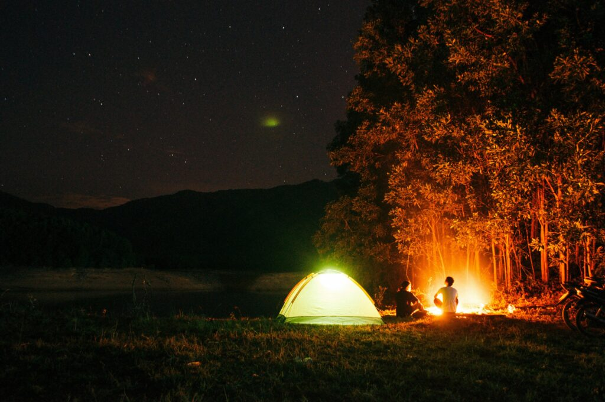
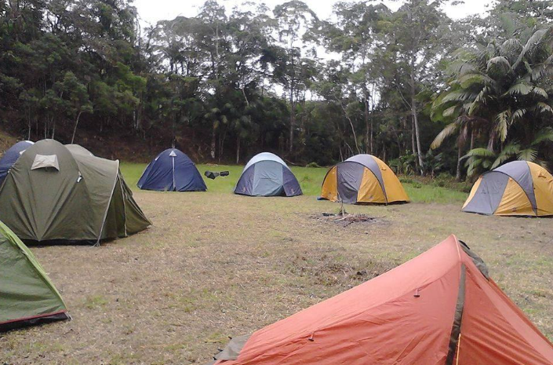
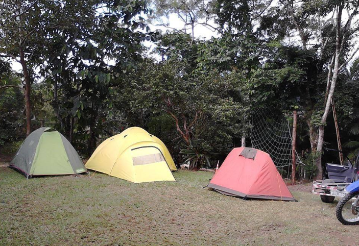

Camping Reserva Paraná Ecoturismo
Visite Morretes e hospede-se de uma forma simples, divertida e conectada com o meio ambiente. Disponibilizamos espaço para camping estruturado e hostel confortável em nossa sede urbana em Morretes.
Além da sede, dispomos de uma reserva ecológica privada mantida e preservada nas encostas da Serra do Mar. Uma propriedade repleta de belíssimas cachoeiras nativas, poços para banho e uma excelente clareira para a prática de acampamento selvagem estruturado.
O campismo é a opção ideal de lazer para quem procura descanso e contato direto com a flora e a fauna da Mata Atlântica paranaense. Durma sob as estrelas ouvindo o som suave do rio e acorde com o canto dos pássaros.


